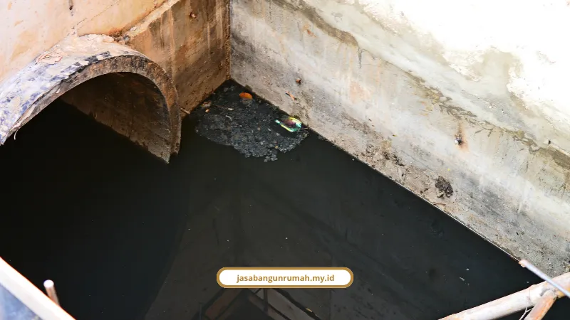

Daftar Isi
Struktur ruko Melayani Makassar yang aman menyediakan parkir off-street di area sempadan depan, dengan drainase tetap terbuka. Pola 45° membuat sirkulasi mobil lancar.
Kami rangkum angka pelanggaran bahu jalan, ukuran petak parkir, spesifikasi lantai, dan sanksinya dalam satu tulisan.
Seberapa Parah Bahu Jalan Depan Ruko Dipakai Parkir?
Hasil pengamatan pada ruas jalan berperkerasan kaku di Kota Makassar menunjukkan 77,2% ruas mengalami penyalahgunaan bahu jalan. Sebanyak 51% untuk keperluan privat dan 49% untuk keperluan komersial di depan pertokoan atau ruko.
Kasus terbanyak tercatat di tiga kecamatan:
- Tamalanrea: 73 kasus
- Panakkukang: 44 kasus
- Rappocini: 35 kasus
Perubahan fisik yang paling sering menyalahi aturan adalah peninggian elevasi bahu jalan (175 kasus) dan penutupan saluran drainase (92 kasus). Akibatnya air menggenang saat hujan dan merusak kemantapan struktur perkerasan jalan.
Peneliti Winarno Arifin, S.T., M.T., Rani Bastari Alkam, S.T., M.T., dan Rachmatan, S.T. (Universitas Muslim Indonesia dan Balitbangda Kota Makassar) menyimpulkan bahwa pengamanan fungsi jalan butuh integrasi ketat antara penerbitan IMB atau PBG dengan penataan drainase dan parkir.
Kenapa Parkir Menentukan Garis Sempadan Ruko?
Penyediaan ruang parkir adalah faktor paling dominan dalam menentukan jarak Garis Sempadan Muka Bangunan (GSMB), dengan pengaruh 29,3%. Angka ini berasal dari studi Analytical Hierarchy Process (AHP) di kawasan komersial Makassar.
Aspar Nurdin, S.T., M.T., Dr. Ir. Arifuddin Akil, M.T., dan Prof. Dr. Ir. Slamet Trisutomo, M.S. dari Universitas Hasanuddin menyimpulkan bahwa area GSMB pada ruko harus difungsikan sebagai parkir off-street. Pengunjung harus tertampung tanpa mengokupasi bahu jalan publik.
Kebutuhannya bisa melonjak drastis. Di koridor komersial seperti Jalan Pengayoman, perubahan guna lahan dari hunian menjadi ruko atau toko menaikkan kebutuhan parkir dari 113 SRP menjadi 1.046 SRP.
Pola Parkir Apa yang Paling Efektif?
Untuk mobil pengunjung, pola paling efektif adalah sudut 45° dengan petak 3 m × 5 m. Pola ini menampung kendaraan secara optimal dan menjaga keluar-masuk tidak memacetkan jalan utama.
Pola lengkapnya:
- Mobil pengunjung: 45°, petak 3 m × 5 m
- Motor pengunjung: 90° tegak lurus, petak 1,05 m × 2,5 m
- Karyawan: area terpisah dengan pola yang sama (mobil 45°, motor 90°), karena durasi parkirnya panjang, sedangkan pengunjung rata-rata 1 sampai 2 jam
Sebagai pembanding, dimensi minimal Satuan Ruang Parkir (SRP) berdasarkan standar teknis adalah:
- Mobil penumpang Golongan I: 2,30 m × 5,00 m
- Golongan II: 2,50 m × 5,00 m
- Golongan III: 3,00 m × 5,00 m
- Sepeda motor: 0,75 m × 2,00 m
Lebar petak 3 m di lapangan sejalan dengan Golongan III. Petak motor 1,05 m × 2,5 m juga lebih lega dari standar minimal.

Perkerasan dan Drainase Seperti Apa yang Benar?
Area parkir ruko harus memakai perkerasan kaku (rigid pavement atau beton) atau paving block. Elevasinya harus terintegrasi dengan saluran drainase terbuka atau berpenutup pintu kontrol supaya air hujan tidak menggenang.
Untuk finishing, cat lantai epoxy pada beton parkir memberi beberapa keuntungan:
- Tahan abrasi gesekan ban kendaraan
- Mencegah debu beton
- Tahan tumpahan oli dan bahan kimia
- Memperjelas marka garis parkir
Epoxy jelas lapisan tambahan yang perlu dianggarkan sejak RAB. Meski begitu, beban ini lebih ringan dibanding memperbaiki lantai yang cepat rusak.
Pekerjaan sipil semacam ini bagian dari kontraktor yang menangani ruko dari fondasi sampai serah terima.
Apa Sanksi Kalau Parkir Mengganggu Jalan?
Pelanggaran yang mengganggu fungsi jalan di ruang manfaat jalan dapat dikenakan denda pidana hingga Rp1.500.000.000 berdasarkan UU No. 38 Tahun 2004, atau denda pidana daerah hingga Rp50.000.000. Pengelolaan parkir sendiri diatur dalam Perda Kota Makassar No. 17 Tahun 2006.
Pemkot Makassar juga menertibkan pengelolaan parkir di kompleks komersial. Kasus Ruko Diamond Panakkukang mencuat akibat keluhan tarif tidak resmi dan izin pengelolaan yang tidak lengkap.
Andi Zulkifly, S.STP., M.Si., Sekretaris Daerah Kota Makassar, menegaskan pemerintah kota aktif berkoordinasi menertibkan pengelolaan parkir di kompleks ruko demi merespons keluhan masyarakat. Menurutnya, penataan parkir yang tertib dan transparan krusial bagi iklim usaha.
Tarif resmi parkir khusus kawasan komersial dari Perumda Parkir Makassar Raya:
- Sepeda motor: Rp3.000
- Mobil: Rp5.000
Struktur ruko yang aman dimulai dari parkir off-street di area GSMB, petak 45° untuk mobil dan 90° untuk motor, perkerasan kaku dengan drainase terbuka, serta lantai epoxy. Kelalaian di area depan bisa berujung banjir dan sanksi.
Kami Melayani Makassar untuk perancangan dan pembangunan ruko yang legal dan kokoh. Konsultasi awal gratis, lalu pesan lewat WhatsApp:
- Jasa kontraktor bangunan untuk struktur dan perkerasan ruko
- Jasa arsitek untuk tata letak dan gambar kerja
- Jasa renovasi bangunan gedung untuk penataan ulang area depan ruko lama